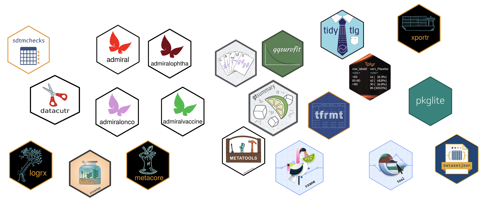
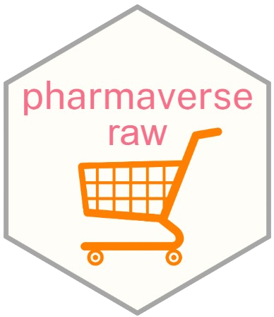
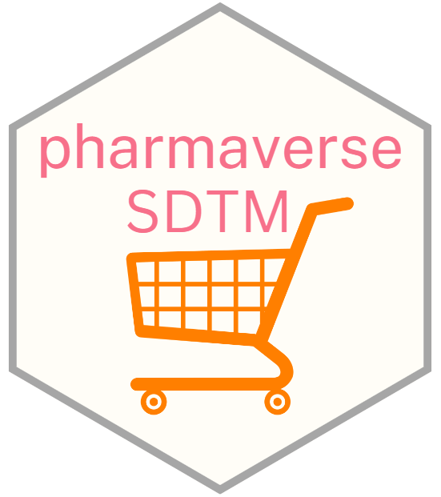
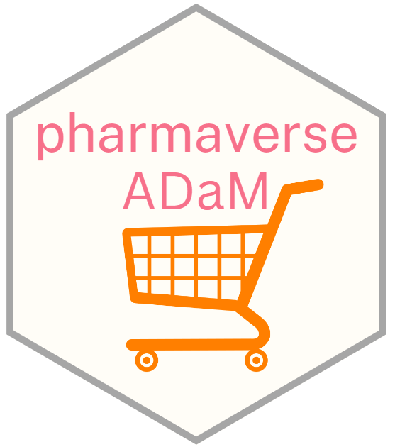
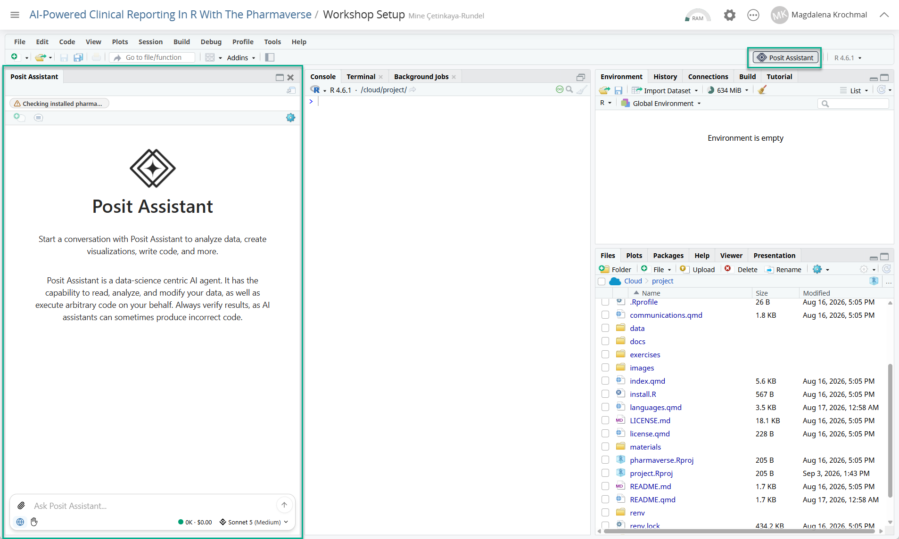
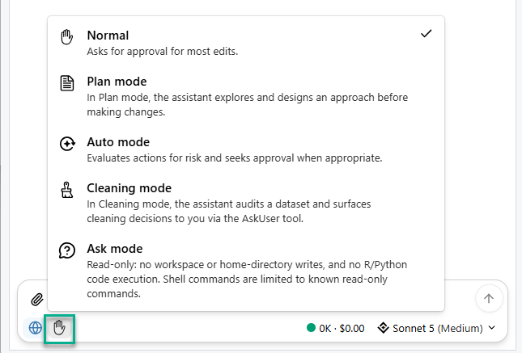
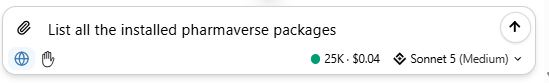

Error in `library()`:
! there is no package called 'pharmaverse'Welcome!
AI-powered clinical reporting in R with the Pharmaverse
posit::conf(2026)
2026-09-14

AI-powered clinical reporting in R with the Pharmaverse
Find a seat where you can see the screen!
Join the Posit Cloud workspace: link
Join the Slack from pharmaverse.slack.com/
WiFI: Posit Conf 2026 |
conf2026
posit::conf(2026) — good to know
📶
WiFi Network Posit Conf 2026 · Password conf2026
🧘
Meditation / Prayer Room 332
🤱
Mother’s Room Room 333
🎤
Speakers Lounge Room 334
📣
Social & photos #PositConf2026 · red lanyards = please don’t photograph
Instructors
Your turn!
🙋
Who are you?
💼
What do you do?
🤖
What AI tools are you using in your daily work?
🎯
What do you hope to get out of today?
Workshop outline
What to expect from this workshop
Explore pharmaverse R packages for clinical reporting
Raw data test data & CDASH / non-CDASH inputs
pharmaverseraw
SDTM standardize raw data into SDTM domains
sdtm.oak
ADaM build analysis-ready datasets from SDTM
admiral
Tables & ARDs summaries, TLGs, analysis results datasets
gtsummary · cards
AI agents & skills accelerate every step — hands-on exercises throughout
Workshop Expectations
Ask questions!
Be respectful to each other and yourself
Your Background
Basic knowledge of R and packages in the tidyverse
Basic knowledge of CDISC Standards (ADaM and SDTM Domains)
Check out the ADaM IG and other documents for CDISC
Check out admiral and admiraldiscovery for CDISC implementation
🦺 However, CDISC knowledge not required, and you will learn! 🦺
Welcome to the pharmaverse!
Goals
Align pharma industry on a set of open source packages based in R to deliver the clinical data pipeline
Design, collaborate, and deliver new solutions where suitable tools do not exist
End-to-End: Clinical Reporting Packages
https://pharmaverse.org/e2eclinical/

End-to-End: The Data



Not that kind of -verse
The pharmaverse is a collection of open-source tools
But we would not want to attempt to load all of them at once.
Industry working on a similar goal
Standards (ie CDISC) means standard tools can be created and shared
Collaboration in the “post competitive” space means everyone has access to free solutions
Team and Regulators seeing consistent packages being used across multiple teams speeds up development and review
pharmaverse: TRUE or FALSE?
pharmaverse makes decisions on how R should be used in the pharma space ✘ FALSE
pharmaverse is a source of information on R packages for the clinical data workflow ✔ TRUE
pharmaverse lets commercial interests from collaborators drive decisions ✘ FALSE
pharmaverse’s scope starts at SDTM and ends at TLF creation ✘ FALSE
you don’t need to be part of pharmaverse to use the tools coming from it ✔ TRUE
pharmaverse packages need to be reviewed by your own GxP process ✔ TRUE
Agents & skills
Ways to use LLMs
The main difference is how much the AI does for you — from answering questions to taking action in your project:
💬 Chat Ask questions, get explanations & code — you copy and paste
ChatGPT, Claude, Gemini
⌨️ Assistant / Ask In-IDE help with your file context — you accept the edits
Copilot, Cursor, Posit Assistant
🤖 Agent Reads files, runs code, edits the project — multi-step, you review
same tools, agent mode
🎯 More autonomy → less typing, more reviewing. Today we focus on the agent end of the spectrum — and Posit Assistant gives us both Ask and Agent modes.
Posit Assistant
In Posit Cloud, we will be using Posit Assistant — an AI assistant built right into the IDE.

Posit Assistant — modes
Posit Assistant offers a few modes depending on how much you want it to do:
💬 Ask Answer questions and explain code — no changes made
🤖 Agent Plan and carry out multi-step edits across your project

Why AI fits clinical reporting
Clinical programming is full of standardized, repetitive patterns — exactly what AI is good at drafting (and you are good at reviewing).
📐 Standards CDISC gives predictable structure the AI can learn
🔁 Repetition The same mapping patterns recur across variables & domains
🧑⚖️ Review culture We already double-check everything — human-in-the-loop by design
Agent vs. skill
🤖 Agent An AI assistant that can read your project, run R, and edit code — not just chat. It plans and carries out multi-step tasks.
🧠 Skill A reusable, checked-in instruction set that teaches the agent your conventions — the pharmaverse way of doing a task.
🧠Skill = knowledge 🤖Agent = executor 👀You = reviewer
One agent, many skills
What the agent does in practice — a loop, not a single answer:
📖Read
files & specs 🧭Plan
the steps ⌨️Write
R code ▶️Run
& check 👀You
review
The same agent, pointed at a different skill, helps at every stage:
📦SDTM
skill 🧬ADaM
skill 📊ARD
skill 📑TLG
skill
💡 We’ll see a concrete SDTM mapping skill in the next session — turning an aCRF into sdtm.oak code that you review and run.
What a skill looks like in practice
Skills live in an .agents/ folder in the repo. A skill can be one file — or a folder with supporting material.
Single document
📁 .agents/skills/
└─ 📄 sdtm-mapping.md
Good for a focused, self-contained task. Everything the agent needs in one place.
Folder with resources
📁 .agents/skills/sdtm-oak-mapping/
├─ 📄 SKILL.md ← entry point
├─ 📁 examples/
│ ├─ 📄 vs_domain.R
│ └─ 📄 dm_domain.R
└─ 📁 reference/
├─ 📄 ct_spec.csv
└─ 📄 algorithms.md
Scales to reusable patterns: worked code, specs, house style.
🔑 Skills are kept in the .agents/ folder. The agent reads SKILL.md first, then opens the extra files only when the task needs them — not all at once.
AGENTS.md in practice
Project-wide house rules the agent reads for every task — checked into the repo root.
🤖 AGENTS.md
💡 AGENTS.md = who we are & how we work — global context, always on.
SKILL.md in practice
A task-specific recipe — loaded only when that task comes up.
🧠 .agents/skills/sdtm-oak-mapping/SKILL.md
---
name: sdtm-oak-mapping
description: Map a raw dataset to an SDTM domain from raw + aCRF.
---
# Map a raw dataset to an SDTM domain
Use when: creating an SDTM domain from raw + aCRF.
Steps
1. List target variables and their CT from the spec.
2. Pick the algorithm per variable.
3. Chain topic then qualifiers; run and preview.
See examples/vs_domain.R for a full worked case.🔑 A SKILL.md must start with YAML frontmatter with two required fields — name and description. AGENTS.md is always loaded; a skill is pulled in on demand, keeping each prompt lean.
Good skills: short & to the point
A skill is loaded into the prompt — longer skill = more tokens = higher cost & slower, and the signal gets diluted.
✅ To the point
- When to use, then clear steps
- Points to examples instead of pasting them
- One responsibility per skill
tokens / cost
❌ Too long
- Whole standards pasted inline
- Repeats what the model already knows
- Ten tasks crammed into one file
tokens / cost
💡 Aim for instructions, not encyclopedias. Teach the how and where to look — let the model bring the general knowledge.
URLs & big references
Can a skill point to external resources? Yes — and it should, for anything large.
- 1 🔗 URLs are allowed — the agent can fetch a page on demand
- 2 📚 Big files are read in chunks / searched, not all at once
- 3 🎯 Link the specific section, not the whole spec
❌ Don’t
- Paste the full CDISC SDTMIG (400+ pages) into the skill
- Blows the context window, adds cost, buries the point
✅ Do
- Summarise the rules you actually apply
- Link the exact codelist / IG section as a URL
- Keep a small
ct_spec.csvthe agent can query
⚖️ Rule of thumb: retrieve, don’t embed. A skill is a map to the knowledge — not a copy of it.
Working environment
For consistency, we will be working in Posit Cloud
Everything has been installed and set up for you
Following the course, all content from this workshop will be available on the course website and GitHub
Quick warm-up
- Open the workshop project in Posit Cloud.
- Show the sidebar with the toolbar icon in the top right of the IDE, then click the button to install Posit Assistant in the project.
- Click Sign in to try Posit AI for free and authorize in your browser. Create your Posit AI account at posit.ai using the same email you registered with — that’s how your workshop credits attach.
- Optional: turn on inline completions with Tools → Global Options → Assistant and pick Posit AI Next Edit Suggestions. These are unlimited and free.
- ➡️ Ask your Posit Assistant to list all the installed pharmaverse packages!
